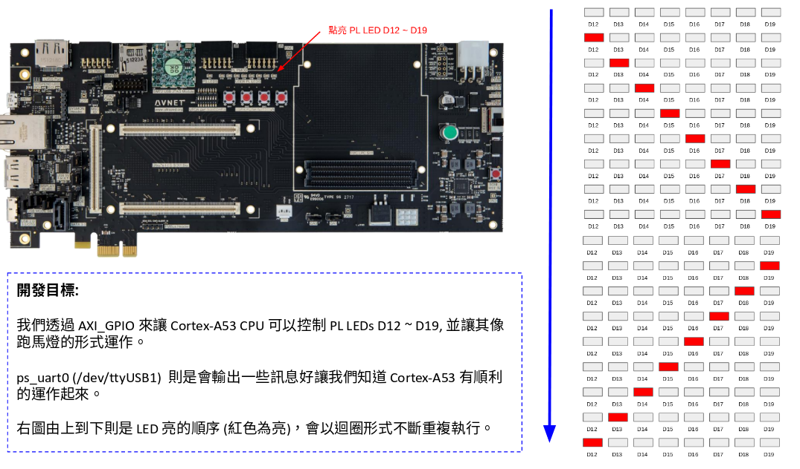
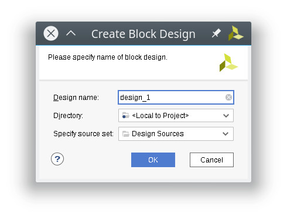

在 UltraZed-EG PCIe Carrier Card 開發紀錄: 硬體認識 一文中我們了解了 UltraZed-EG PCIe Carrier Card 這一塊開發板的一些資訊後，是時候來開發點專案啦~
在這篇文章中，我們將讓這塊開發板的 Cortex-A53 透過 AXIO_GPIO 模組，點亮板子上的 LED 燈，並且透過 ps_uart0 輸出一些訊息。
(本文以 Vivado 2018.2 進行開發)
開發目標
我們這次的開發目標是這樣子的，除了透過 ps_uart0 輸出訊息外，順便驗證如何透過 AXI_GPIO 去控制 User Leds D12 ~ D19 這些位於可程式邏輯區 (Programmable Logic, PL) 上的 LED 們。
由於單純點亮點暗太無聊了，所以就寫成跑馬燈的形式吧 (也是蠻無聊的 Orz…)

建立專案
首先讓我們打開 Vivado 吧~ 不過在進行這一步之前，請先確定你有依照 讓 Vivado 有 UltraZed-EG PCIe Carrier Card 的設定檔 一文的說明，讓我們在建立專案的時候可以找到 UltraZed-EG PCIe Carrier Card 這塊板子。
啟動了 Vivado 後，點選 Create New Project
接下來指定好專案路徑和名稱
選擇 RTL Project
選擇 UltraZed-EG PCIe Carrier Card
完成專案的建立

建立 Block Design
由於我們的設計需要用到 Xilinx 一些現成的 IP 的時候，就會需要透過 Block Design 來建立我們的電路設計。
首先點選 IP Integrator -> Create Block Design
接著點選 OK 建立我們的 Block Design

點選 Add IP 按鈕去增加我們需要的 IP 核
我們首先尋找 Zynq UltraScale+ MPSoC 並將它加入到我們的 Block Design，並點選 Run BLock Automation 對該 IP 做一些設定
進入到 Run BLock Automation 的設定頁面後，確認 zynq_ultra_ps_e_0 有被勾選到，並且 Apply Board Preset 有被設定起來。
點選 OK 完成設定。
接下來，我們根據我們的 開發目標 來加入 LED 的接線
點選 Board ，將 LED 拖曳到 Diagram 內
於是我們的 Block Design 就會變成這個樣子
點選 Run Connection Automation 進行連線，會進入到以下視窗，這邊直接點選 OK 即可
我們已經完成我們的設計囉，點選 Validate Design 按鈕來確認設計沒問題
沒問題的話，就讓我們來結束 Block Design 的工作吧
產生 HDL Wrapper
接下來我們要將剛剛用 Block Design 建立的電路變成 verilog 程式碼，因此會需要進行產生 HDL Wrapper 這個步驟。
對你的 Block Design 檔案點選右鍵，選擇 Create HDL Wrapper ，它會根據你專案設定的語言 (VHDL 或是 Verilog) 來產生相對的 HDL 程式碼。
由於這次我們不需要對產出來的東西進行修改，因此選 Let Vivado manage wrapper and auto-update 即可
好了後，假設你的 Block Design 檔案叫做 design_1.bd ，那就會產生 design_1_wrapper.v 或是 design_1_wrapper.vhdl 這樣的檔案。
產生位元流 (bitstream)
前面的處理都好了後，接下來點選 Program and Debug -> Generate Bitstream 去讓 Viavado 將這個專案產生出
位元流 (bitstream) ，Zynq UltraScale+ 會在開機的時候根據 bitstream 的資訊對 FPGA 進行設定。

這個產生的過程視你的電腦強度如何而決定花多少時間，總之先來泡杯茶吧~
當 bitstream 完成後，我們準備執行 Xilinx SDK 來透過寫 C 語言專案來讓 Cortex-A53 可以透過 AXI_GPIO 對 LED 進行控制，因此要先將剛剛產生的硬體資訊輸出給 Xilinx SDK 去。
點選 File -> Export -> Export Hardware
確定你有勾選 Include bitstream 後，點選 OK

完成後，執行 Xilinx SDK
Xilinx SDK
啟動 Xilinx SDK 後，點選 File -> New -> Application Project 去建立新的專案
這邊我命名這個專案為 hello ，並指定為 standalone 的程式，該程式將運作在 Cortex-A53 的 CPU0 上。
由於我們很懶，因此這次選用預設的樣板 Hello World 來建立我們的專案，好了後點選 Finish
當專案建立完成後，會自動打開 hello_bsp 裡面的 system.mss ，裡面會顯示我所使用的週邊文件連結或是加入範例程式碼，比如我們如果要了解 axi_gpio 怎樣使用的話，可以點選它的手冊。
這樣就會透過瀏覽器打開如以下的頁面 (或是到 這個網址 看線上文件)
打開 helloworld.c
由於我們是使用樣板 Hello World 去建立我們的專案的，因此預設的程式是 helloworld.c ，我們打開它可以看到以下內容
/* * helloworld.c: simple test application * * This application configures UART 16550 to baud rate 9600. * PS7 UART (Zynq) is not initialized by this application, since * bootrom/bsp configures it to baud rate 115200 * * ------------------------------------------------ * | UART TYPE BAUD RATE | * ------------------------------------------------ * uartns550 9600 * uartlite Configurable only in HW design * ps7_uart 115200 (configured by bootrom/bsp) */ #include <stdio.h> #include "platform.h" #include "xil_printf.h" int main() { init_platform(); print("Hello World\n\r"); cleanup_platform(); return 0; }
這個程式會自動透過 ps_uart0 輸出 Hello World 訊息，而由於我們將使用的是 ps7_uart ，因此 baudrate 會是 115200 。
接下來我們的任務就是加入 LED 的控制功能了，不過在這之前，也許讀一下 UG643 (2018.2): Xilinx Standalone Library Documentation - OS and Libraries Document Collection.pdf 這份文件可以讓我們對 Xilinx 的函式庫有所了解些。
加入 LED 控制
我們基於剛剛打開的 helloworld.c 來加入我們對 AXI_GPIO 的控制，首先先加入兩個 header file。
#include "sleep.h" // for usleep() #include "xgpio.h" // for gpio control
每個 AXI_GPIO 模組都會有兩個 channel 作為輸出，由於這邊我們走得是預設的，也就是第一個 channel，因此先做個 macro 好方便後續的程式撰寫。
/* * The following constant is used to determine which channel of the GPIO is * used for the LED if there are 2 channels supported. */ #define LED_CHANNEL 1
接下來，在 main() 裡面，執行 init_platform(); 後面的位置加入我們對 GPIO 的初始化，假設初始化失敗的話，則透過 xil_printf() 輸出錯誤訊息並回傳 XST_FAILURE 。
其中 XPAR_GPIO_0_DEVICE_ID 定義在 xparameter.h 裡面，為 Xilinx SDK 自動產生出來的檔案，你可以將其對應回我們的 Block Design 裡面的 axi_gpio_0 。
XGpio Gpio; /* The Instance of the GPIO Driver */ /* Initialize the GPIO driver */ int Status = XGpio_Initialize(&Gpio, XPAR_GPIO_0_DEVICE_ID); if (Status != XST_SUCCESS) { xil_printf("Gpio Initialization Failed\r\n"); return XST_FAILURE; }
初始化完成後，由於 LED 是屬於 GPIO 的輸出功能，因此要指定這些 GPIO 為 Output
/* Set the direction for all signals as LED output */ XGpio_SetDataDirection(&Gpio, LED_CHANNEL, 0);
接著我們定義兩個變數，一個是用來控制 LED 當前狀態的變數，另外一個則是控制我們跑馬燈的方向
/* * D12 is ON by default, D13 ~ D19 are OFF * * D19, D18, D17, D16, D15, D14, D13, D12 * * 0 0 0 0 0 0 0 1 */ int LED = 0b00000001; /* * 0: left to right (D12 -> D19) * 1: right to left (D19 -> D12) */ int direction = 0;
最後則是我們的迴圈，我們透過 XGpio_DiscreteWrite() 去對我們的 LED_CHANNEL 寫入當前 LED 的輸出狀態，並透過定義在 sleep.h 裡面的 usleep() 來做點延遲，避免因為視覺暫留效應而導致我們肉眼以為 LED 沒有在閃爍。
當 LED 為 0b10000000 時，也就是 D19 為 ON 的情況，修改我們的 direction 變數，讓原本對 LED 變數進行左移的運作改成右移。
當 LED 為 0b00000001 時則相反，讓 LED 變數變成左移運算。
/* Loop forever blinking the LED */ while (1) { /* Set the LED to High */ XGpio_DiscreteWrite(&Gpio, LED_CHANNEL, LED); /* Wait a small amount of time so the LED is visible */ usleep(20 * 1000); /* delay 20ms */ /* Clear the LED bit */ XGpio_DiscreteClear(&Gpio, LED_CHANNEL, LED); /* Wait a small amount of time so the LED is visible */ usleep(20 * 1000); /* delay 20ms */ /* When D19 is ON, change direction */ if (LED == 0b1000000) direction = 1; /* 1: right to left (D19 -> D12) */ /* When D12 is ON, change direction */ if (LED == 0b0000001) direction = 0; /* 0: left to right (D12 -> D19) */ /* Change LED status according to direction */ if (direction == 0) LED = LED << 1; /* shift left */ else LED = LED >> 1; /* shift right */ }
就這樣，我們的程式完成了，可以開始進行燒錄囉~
設定 JTAG 下載
為了透過 Micro USB 連接到 UltraZed-EG PCIe Carrier Card 上的 JTAG 來進行下載，我們需要對 UltraZed-EG 上的 SW2 要進行一些調整，變成下圖這樣。
這樣子就可以透過 Micro USB 走 JTAG 下載的路線，將程式下載下去
下載到開發板 (FPGA)
由於我們到目前為止還沒有將編譯好的位元流 (bitstream) 下載到我們的 UltraZed-EG PCIe Carrier Card 去，因此先來下載吧。
點選 Xilinx -> Program FPGA 進入到下載頁面
點選 Program 將我們的位元流 (bitstream) 下載下去
下載好了後，由於我們的程式還沒燒到 Cortex-A53 上，因此要進行下載 ELF 的動作
下載到開發板 (ELF)
點選 Run -> Run Configuration 去建立我們新的執行目標
對 Xilinx C/C++ Application (GDB) 點兩下，建立執行目標，並確認 Run psu_init 和 PL Powerup 有被勾選起來。
點選 Application 確認我們的下載目標是 psu_cortexa53_0 ，並且下載的 elf 檔案沒有錯
點選 Run 即開始下載囉，希望一切順利 ~
結果
按照本篇文章的設定，你的 UltraZed-EG PCIe Carrier Card 顯示應該如以下影片:
另外，我們也可以透過 minicom, emacs, tio, gtkterm 等終端機軟體，連接上 /dev/ttyUSB1 來查看透過 printf() 輸出的訊息。
取得程式碼
本文的範例已經上傳到 coldnew/ultrazed_pciecc_helloA53 ，你可以透過以下命令獲得
git clone https://github.com/coldnew-examples/ultrazed_pciecc_helloA53.git
延伸閱讀
- zybo board 開發記錄: Zynq 與 LED 閃爍控制
- ECE699: Lecture 4 - Intrrrupts AXI GPIO and AXI Timer.pdf
- AXI GPIO v2.0 LogiCORE IP Product Guide.pdf
- UG643 (v2018.2): Xilinx Standalone Library Documentation - OS and Libraries Document Collection.pdf
- Xilinx Wiki: AXI gpio standalone driver
- UG1209 (v2018.2): Zynq UltraScale+ MPSoC: Embedded Design Tutorial.pdf